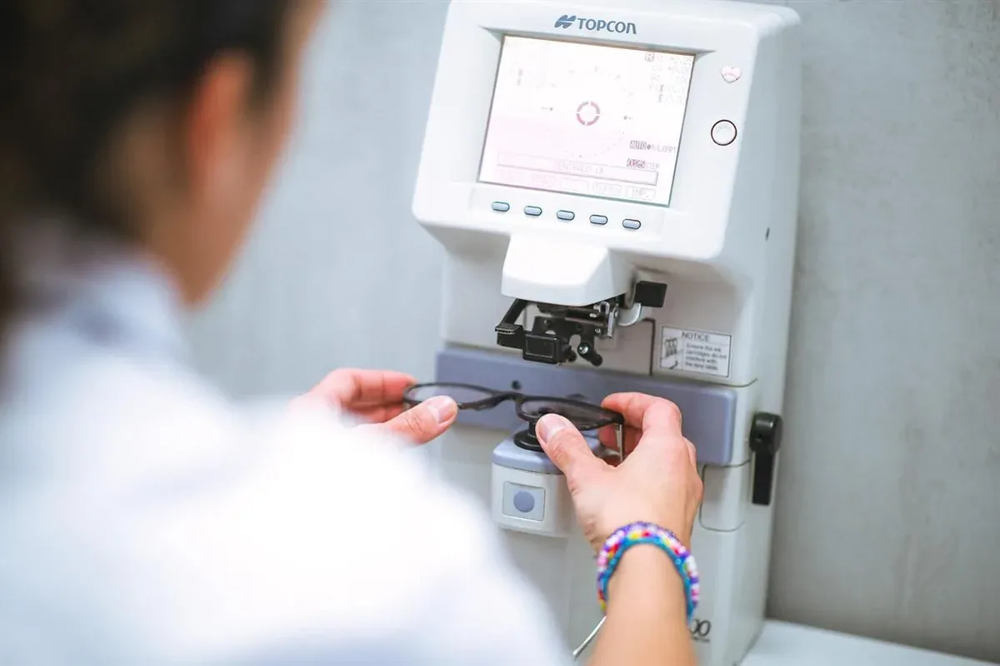

Especialidad
Consulta oftalmológica general
El control que detecta a tiempo lo que todavía no se nota. Para todas las edades, sin derivación previa.
En pocas palabras
Qué es y qué tratamos
La consulta general es la puerta de entrada al instituto: un oftalmólogo evalúa la visión, la graduación, la presión ocular y el fondo de ojo, y resuelve la mayoría de los motivos de consulta en el mismo acto. Cuando el cuadro lo requiere, deriva a la subespecialidad correspondiente —glaucoma, retina, córnea, pediatría— dentro del mismo equipo. Muchas enfermedades del ojo no dan síntomas al principio: por eso el control periódico es la herramienta más importante para conservar la visión.



Preguntas frecuentes
Sobre consulta oftalmológica general
¿Cada cuánto hay que hacerse un control oftalmológico?
Sin síntomas ni antecedentes, una vez por año a partir de los 40. Antes, según la indicación del médico y siempre en la infancia. Con diabetes, glaucoma familiar o miopía alta, el especialista define la frecuencia.
¿Necesito derivación para pedir turno?
No. Podés pedir turno directamente por WhatsApp o por teléfono. Solo tenés que consultar la cobertura de tu obra social o prepaga.
¿Qué incluye la consulta?
Interrogatorio, medición de la visión y la graduación, examen con lámpara de hendidura, presión ocular y fondo de ojo. Si hace falta dilatar la pupila, la visión de cerca queda borrosa unas horas: conviene no manejar.
¿Atienden niños en la consulta general?
Sí, y el instituto cuenta además con un equipo de oftalmología pediátrica para los controles por edad, el ojo vago y el estrabismo.
Turnos
Consultá con los especialistas en consulta oftalmológica general
Lunes a viernes de 7:30 a 19:30 en Bv. Chacabuco 879, Nueva Córdoba. Para urgencias, guardia las 24 horas.